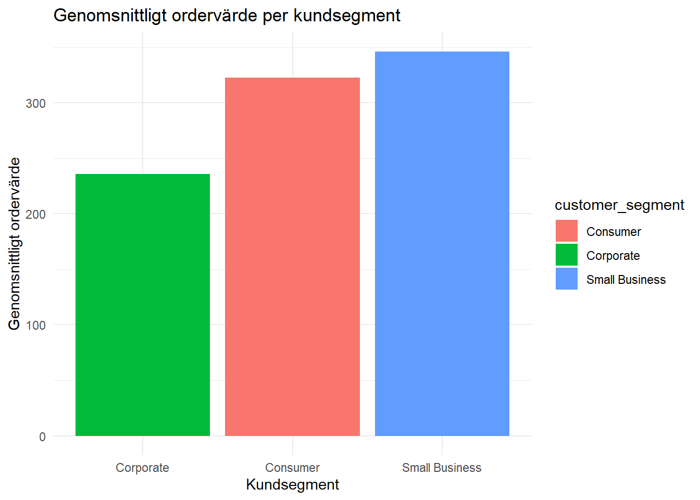
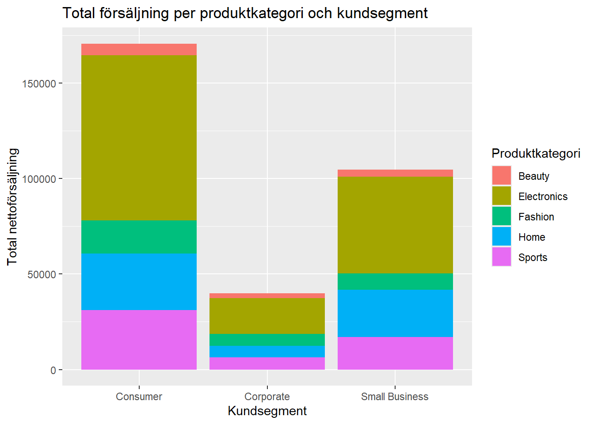
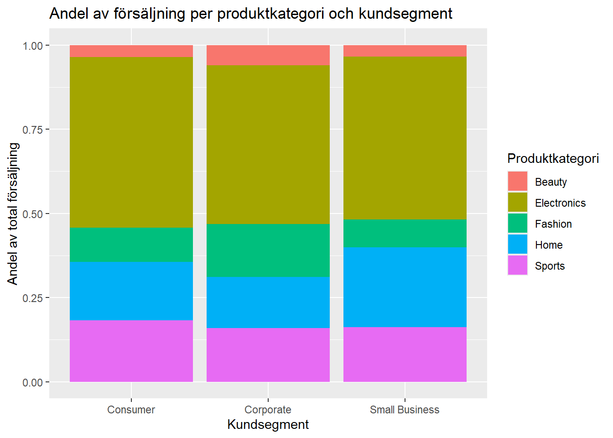

Företaget vill få bättre förståelse för verksamheten och vill använda data som underlag för beslut. Vi ska genomföra en tydlig dataanalys i R och använda datat för att besvara ett antal relevanta frågeställningar. Arbetet innehåller följande fem moment:
Dataförståelse
Datastädning och förberedelse
Statistiska sammanfattningar
Visualiseringar
Tolkningar och slutsatser
Dataförståelse
Datasetet innehåller 1 000 observationer och 16 variabler. Datat omfattar information om ordrar, kunder, produkter, rabatter, leveranser och returer.
Kategoriska variabler: order_id, order_date, customer_id, customer_segment, customer_type, region, city, product_category, product_subcategory, payment_method, campaign_source, returned
returned omvandlas till logisk variabel (TRUE/FALSE)
Saknade värden
Explicita (NA):
discount_pct (27 st) - tolkas som 0
shipping_days (22 st) - lämnas som NA
Implicita (tomma värden):
city - omvandlas till NA
payment_method - omvandlas till NA
campaign_source - omvandlas till NA
Datakvalitet
Flera kategoriska variabler innehåller inkonsekvenser, t.ex.:
stora/små bokstäver (“Stockholm”, “stockholm”)
extra mellanslag (“Gothenburg”)
olika stavningar (“PayPal”, “Paypal”)
Dessa behöver standardiseras för korrekt analys.
Viktiga variabler för analys
Försäljning: quantity, unit_price, discount_pct
Kund: customer_segment, customer_type
Returer: returned
Leverans: shipping_days
Produkt: product_category
Marknadsföring: campaign_source
Datastädning & förberedelse
Rådatan städas enligt föregående avsnitts upptäckter och rekommendationer. Detta görs med hjälp av tidyverse-paketet tillsammans med Feature Engineering i en och samma pipe.
Skapandet av nya variabler (Feature Engineering)
Flertalet nya variabler skapas för att möjliggöra olika analyser.
Ekonomiska nyckeltal
order_value: bruttovärde (kvantitet * pris)
price_after_discount: pris per enhet efter avdragen rabatt
order_value_net: det faktiska totalbeloppet efter rabatt
Kategorisering
discount_group: grupperar rabatter i kategorierna ”Ingen rabatt”, ”Låg”, ”Medium” och ”Hög” baserat på procentsatsen
delivery_category: delar upp leveranstiden i ”Snabb” (≤ 2 dagar) eller ”Långsam”
Tidsdimension
order_month: extraherar år och månad för att kunna följa trender över tid
Den transformerade datan sparas i en ny variabel: data_clean
Valda frågeställningar
Vi har valt ut tre stycken frågeställningar från den givna listan samt en egenformulerad.
Vilka produktkategorier verkar driva högst försäljning?
Hur skiljer sig ordervärde mellan olika kundsegment?
Finns det samband mellan rabatt och ordervärde?
Vilka produktkategorier har högst försäljning hos de olika kundsegmenten? (egen frågeställning)
De valda frågeställningarna fokuserar på att analysera försäljning, vilket är företagets mest centrala funktion. Genom att undersöka vilka produktkategorier och kundsegment som driver högst försäljning kan företaget identifiera sina viktigaste intäktskällor.
Att analysera sambandet mellan rabatt och ordervärde kan ge insikter om kundernas köpbeteende och detta är viktigt för att kunna optimera prissättning och kampanjer.
Den egna frågeställningen valdes för att komplettera analysen och ge ytterligare förståelse för faktorer som kan påverka försäljningen. Tillsammans bidrar dessa frågeställningar till en helhetsbild av företagets försäljning och kundbeteende vilket kan användas som underlag för strategiska beslut.
Nedan följer en sammanfattning för varje vald frågeställning som inkluderar metod, resultat samt slutsatser och eventuella begränsningar.
1. Vilka produktkategorier verkar driva högst försäljning?
För att besvara frågeställningen analyserades försäljningen per produktkategori. Ordervärdet beräknades baserat på antal, styckpris och rabatt, och därefter summerades försäljningen för varje kategori.
Figur 1 visar den totala försäljningen per produktkategori.
Figuren visar tydligt att Electronics är den kategori som genererar mest försäljning, med en tydlig marginal till övriga kategorier.
Figur 2 visar antal ordrar per produktkategori.
Denna figur ger ytterligare förståelse för hur försäljningen uppstår. Kategorier som Fashion har många ordrar men lägre total försäljning, medan Electronics kombinerar både högt ordervärde och relativt många ordrar.
Sammanfattningsvis visar analysen att Electronics är den produktkategori som driver högst försäljning. Detta beror sannolikt på en kombination av höga ordervärden och en relativt hög efterfrågan.
Analysen visar också att olika kategorier bidrar till försäljningen på olika sätt. Vissa kategorier drivs främst av höga priser per order, medan andra drivs av ett stort antal ordrar.
Resultaten kan användas som underlag för beslut kring exempelvis marknadsföring, lagerhållning och produktstrategi.
En begränsning i analysen är att den inte tar hänsyn till kostnader eller vinstmarginaler, vilket innebär att hög försäljning inte nödvändigtvis motsvarar hög lönsamhet.
2. Hur skiljer sig ordervärde mellan olika kundsegment?
Skapade en sammanfattning av genomsnittligt och medianordervärde för varje kundsegment, samt antal ordrar och andel av totalen. Detta för att få en tydlig överblick över hur ordervärdet varierar mellan segmenten och hur stora de är i relation till varandra.
data_clean_customer_segment
# A tibble: 3 × 5
customer_segment count avg_order_value median share
<chr> <int> <dbl> <dbl> <dbl>
1 Small Business 302 346. 162. 0.302
2 Consumer 529 323. 161. 0.529
3 Corporate 169 236. 137. 0.169
order_value_by_segment_viz

Stapeldiagrammet visar det genomsnittliga ordervärdet per kundsegment. Diagrammet sorterades från lägst till högst för att tydliggöra skillnaderna mellan segmenten och göra det enkelt att jämföra deras relativa nivåer.
Small Business har det högsta genomsnittliga ordervärdet, följt av Consumer, medan Corporate ligger tydligt lägst.
Skillnaden mellan högsta och lägsta segmentet är cirka 46,86%.
Att Small Business har det högsta ordervärdet är inte oväntat, då mindre företag ofta gör större inköp per order jämfört med privatkunder.
Antalet observationer skiljer sig mellan segmenten, där Consumer står för den största andelen medan Corporate är betydligt mindre. Detta innebär att resultaten i högre grad påverkas av Consumer-segmentet, och att jämförelser mellan segment bör tolkas med viss försiktighet.
3. Finns det samband mellan rabatt och ordervärde?
Skapade en sammanfattning över ordervärde och rabatt. Sammanfattningen svarar på frågor som vad är det genomsnittliga order/ rabattvärdet? Vad ligger medianen på i respektive kolumner? Och vad är det högsta rabatt/ ordervärdet?
Figuren visar ordervärde på x-axeln och rabatt på y-axeln, samt en trendlinje för att tydligare se om det verkar finnas ett samband.
Av vår figur kan vi inte se något tydligt linjärt samband mellan ordervärde och rabattmängd. Scatterplotten visar en plan linje vilket indikerar att ett högre ordervärde inte resulterar i en högre rabatt. Vid varje ordervärde(framförallt låga) finns det en stor variation i hur mycket rabatt kunderna fått och det går inte att se något tydligt mönster, vilket ger stöd åt tesen att det inte finns något samband mellan enbart dessa två variabler.
Fler variabler krävs för att förstår vad som påverkar rabattvärde. Extremvärden ger även en skev bild av meddelvärdet som inte motsvarar kunderas beteende. (Medelvärde -315, Median -152)
4. Vilka produktkategorier har högst försäljning hos de olika kundsegmenten?
Skapade en sammanfattning av den totala nettoförsäljningen för varje produktkategori och kundsegment, tillsammans med antalet ordar, median och genomsnittligt ordervärde för att få en överblick och kunna jämföra försäljningen mellan de olika kategorierna.
sales_summary_04
# A tibble: 15 × 6
product_category customer_segment total_rev num_orders avg_order mdn_order
<chr> <chr> <dbl> <int> <dbl> <dbl>
1 Electronics Consumer 86538. 133 651. 450.
2 Sports Consumer 31029. 81 383. 237.
3 Home Consumer 29793. 105 284. 143.
4 Fashion Consumer 17206. 130 132. 101.
5 Beauty Consumer 6115. 80 76.4 63.4
6 Electronics Corporate 18761. 37 507. 404.
7 Sports Corporate 6327. 27 234. 186.
8 Fashion Corporate 6251. 44 142. 114.
9 Home Corporate 6063. 29 209. 102.
10 Beauty Corporate 2415. 32 75.5 55.7
11 Electronics Small Business 50512. 73 692. 486.
12 Home Small Business 24713. 73 339. 159.
13 Sports Small Business 16956. 48 353. 236.
14 Fashion Small Business 8750. 61 143. 99.2
15 Beauty Small Business 3626. 47 77.2 63.6
total_sales_viz_stacked

total_sales_viz

Den första figuren visar den totala försäljningen för varje kundsegment, uppdelat i produktkategorier. Den andra figuren visar andelen av försäljning per produktkategori och kundsegment, från 0-100%, och ger också en tydlig bild hur de förhåller sig till varandra.
Electronics är den klart starkaste kategorin bland alla typer av kunder.
Det motsatta gäller Beauty, det är den klart minsta kategorin.
Tydligaste skillnaderna ses bland Home- och Fashion-produkter mellan Small Business och Corporate.
Consumer står för den absolut största totala försäljningen, medan Corporate står för en betydligt mindre del.
Analysen kan användas för att optimera riktad marknadsföring beroende på typ av kund, men som i tidigare analys säger den inget om eventuell vinstmarginal.
Slutsats och sammanfattning
Analysen visar att försäljningen i stor utsträckning drivs av specifika produktkategorier och kundsegment, snarare än rabatter. Med hjälp av våra fyra frågeställningar kunde vi få en tydlig inblick i köpmönster hos olika typer av kunder.
Electronics har högst försäljning med stor marginal, följt av Home och Sports, vilket visar att dessa kategorier är företagets viktigaste intäktsdrivare.
Electronics är också den klart starkaste kategorin bland alla typer av kunder, vilket tyder på en stabil efterfrågan oavsett kundsegment. De tydligaste skillnaderna ses bland Home- och Fashion-produkter mellan Small Business och Corporate, vilket indikerar att olika kundgrupper bidrar olika mycket till försäljningen beroende på produktkategori.
Small Business har det högsta genomsnittliga ordervärdet, följt av Consumer, medan Corporate ligger tydligt lägst. Detta innebär att Small Business är en särskilt värdefull kundgrupp ur ett försäljningsperspektiv då de bidrar mest per köp.
Inget tydligt samband mellan rabatt och ordervärde, vilket tyder på att rabatter inte är en avgörande faktor för att öka försäljningen i detta dataset.
Det är dock viktigt att notera att hög försäljning inte nödvändigtvis innebär hög lönsamhet, vilket gör det relevant att i framtida analyser även inkludera vinstmarginaler.
Nästa steg kan vara att göra djupare analys kring köpmönster runt kampanjer (rabatt) och tidsanalyser för att identifiera när och varför försäljningen är som högst. Detta kan ge ytterligare insikter om hur försäljningen kan optimeras.
Resultaten visar att företaget bör fokusera på att stärka de mest intäktsdrivande produktkategorierna samt rikta sina insatser mot kundsegment med högt ordervärde. Detta kan bidra till att maximera försäljningen snarare än att enbart öka volymen genom rabatter.